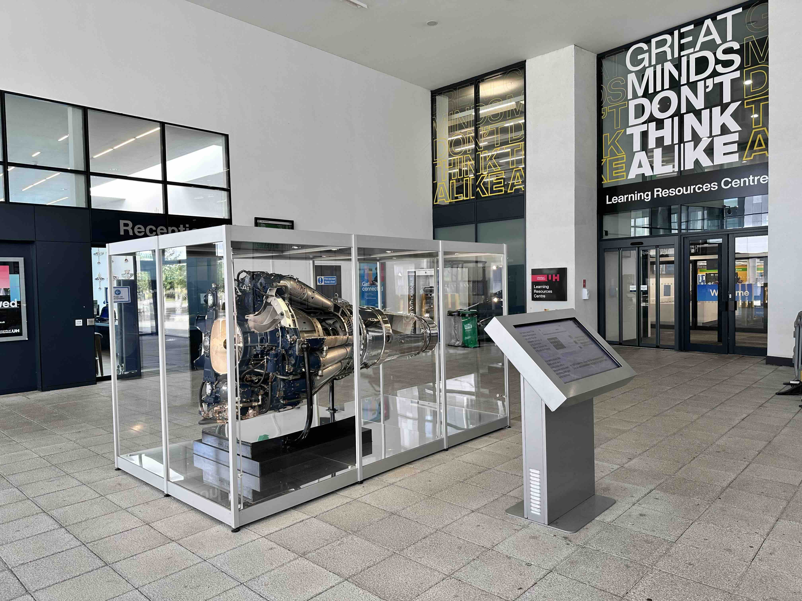
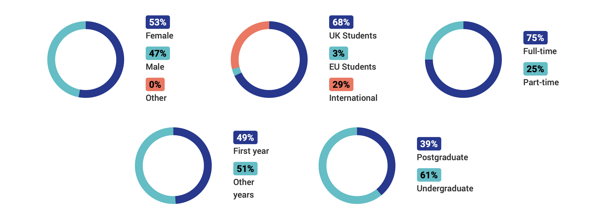
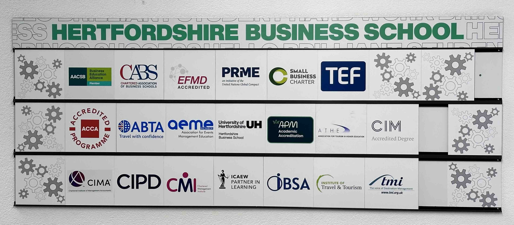
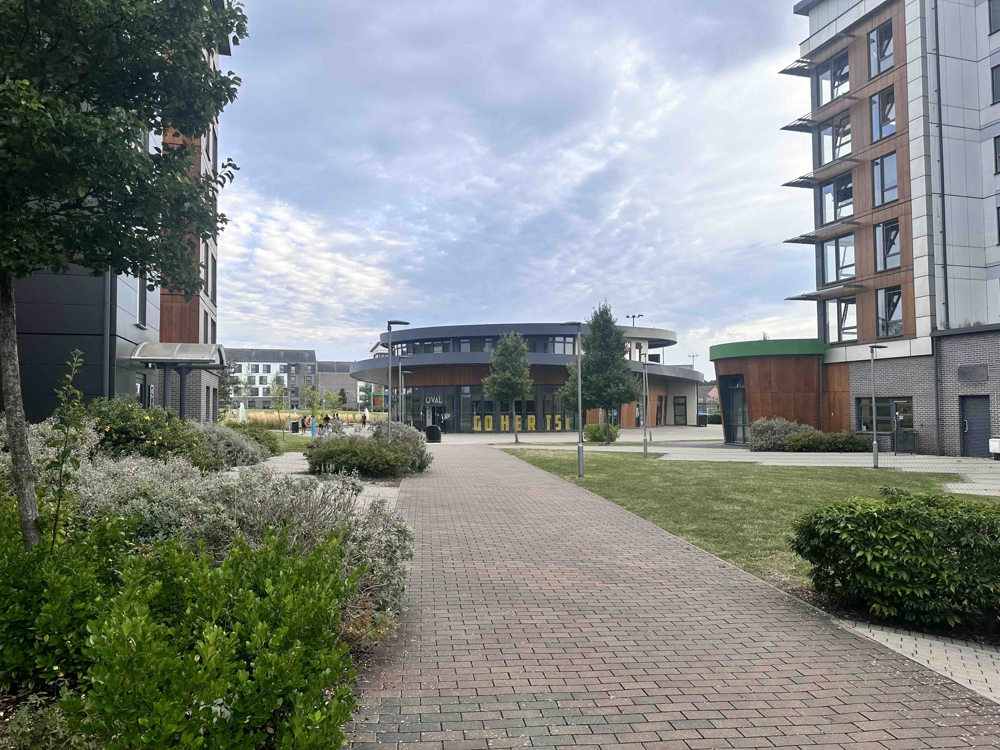
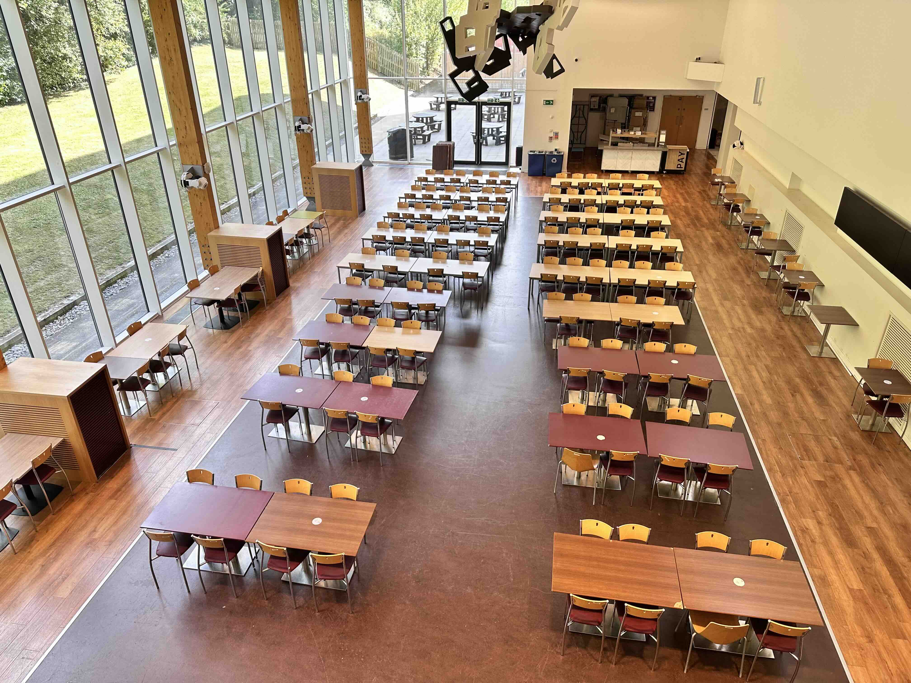
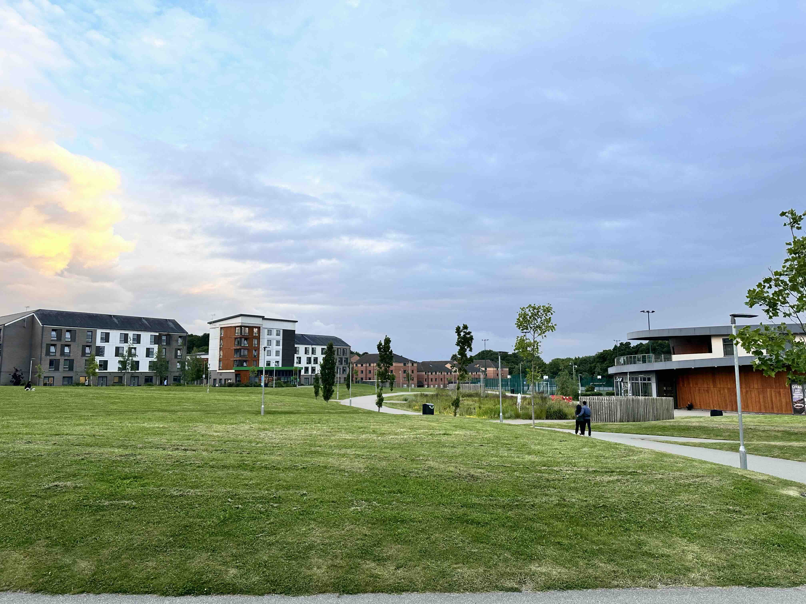
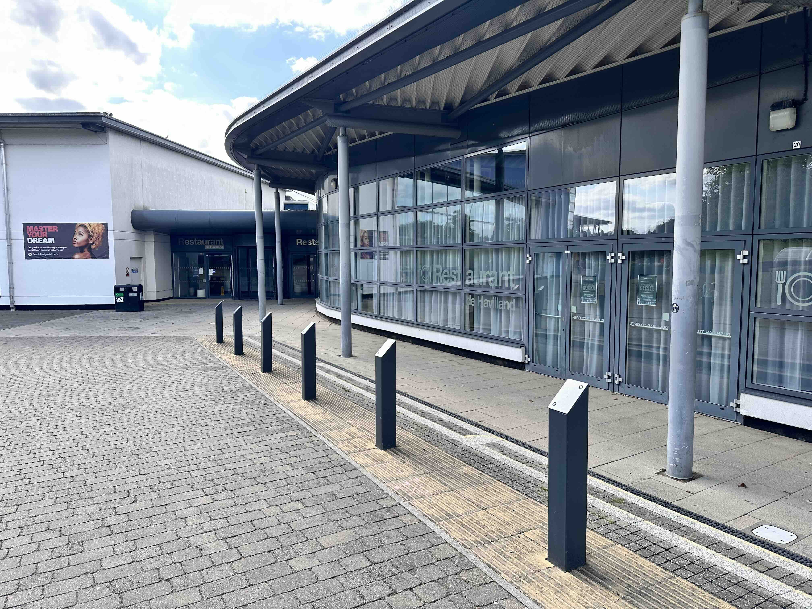

Hertfordshire Üniversitesi

Hertfordshire Üniversitesi (UH) yaklaşık yetmiş yıllık bir geçmişe sahip. Üniversitenin bulunduğu Hatfield şehri 2. Dünya Savaşı sırasında sahip olduğu endüstri tesisleri ile özellikle havacılık alanında ün kazanmış. İlk olarak 1952 yılında mekanik, havacılık ve doğa bilimleri alanlarında teknik eğitim veren bir kolej olarak ortaya çıkan eğitim kurumu, 1992 yılında üniversite statüsüne kavuşmuş. Gerek tesisleri gerekse akademik birikimi ile UH düzenli olarak gelişerek günümüze kadar ulaşmış.

Bugün yaklaşık 32000 öğrenci Hertfordshire Üniversitesi'nde öğrenimine devam etmekte. Bu sayının üçte birine yakınını uluslararası öğrenciler oluşturuyor. Bu oranlar lisansüstü programlarda çok daha yüksek. Güney Kore, Kanada, İran, Pakistan, Japonya, İtalya, İspanya gibi pek çok farklı ülkeden öğrenciler olmakla beraber yurt dışından gelen öğrencilerin çoğunluğunu Hintliler oluşturuyor. Türkler üniversitede ve şehirde nispeten az sayıda. Hertfordshire üniversitesi lisans, lisan öncesi ve lisans üstü çeşitli programlar sunuyor. Bölümler tarihleri ve kayıt koşulları oldukça kapsamlı bir konu olduğundan burada daha fazla ayrıntı vermeyeceğim. Yalnızca devam ettiğim İşletme yüksek lisans programının (03/09/2024) akreditasyonlarını paylaştım. Her programla ilgili en güvenilir ve güncel bilgileri üniversitenin web sayfası'nda ve UCAS'ta bulabilirsiniz.

Hertfordshire Üniversitesi Kampüs
Üniversite Collage Lane ve de Havilland isimli iki farklı kampüsten oluşuyor. Her iki kampüste de öğrenci yurtları, 7/24 açık kütüphaneler (LRC, Learning Resources Centre) ve öğrenci restorantları bulunuyor.






Restorantlar açık büfe usulü çalışıyor. Hijyen ve yemek çeşitliliği tatminkar. Kampüs dışında yiyeceğiniz benzer bir öğünle kıyaslandığında fiyatların makul olduğunu söyleyebilirim.
Kütüphaneler iyi fiziksel ve teknik koşullara sahip. Aralarında yüksek grafik gereksinimli çalışmaların yapılabileceği Mac'lerin de bulunduğu 800 adet masa üstü bilgisayar öğrencilerin kullanımına sunulmuş. Ayrıca, öğrenci kimlik kartınızla ödünç alabileceğiniz diz üstü bilgisayarlar da bulunuyor.


Kampüslerde kapalı ve açık pek çok spor tesisi mecut. de Havilland Kampüsü'ndeki Sports Village biraz pahalı olmakla beraber, her iki kampüste de iyi donanıma sahip fitness merkezlerinde kardiyo ve ağırlık çalışmaları yapabilmeniz mümkün. Tesisler genel olarak öğrencilere ücretsiz değil ve belirli saatlerde kullanılabiliyor.

Akademik dönemler boyunca kampüsler arasında ücretsiz "shuttle bus" çalışıyor. Bu mesafe kısa. Yürümeyi tercih ederseniz kabaca 15 dakika sürüyor.


Ana kampüs olarak değerlendirebileceğimiz Collage Lane'de ağırlıklı olarak lisans bölümleri yer alıyor. de Havilland ile kıyaslandığında daha kalabalık olduğu söylenebilir. Kampüs içinde Subway, Starbucks ve dış mekanlı kafeler bulunuyor. Kariyer ofisi, mediko ve öğrenci birliği gibi bölümlerin olduğu “Hutton Hub” binası da Collage Lane'de. Kampüsteki Forum binası gösteri, eğlence merkezi ve diskosuyla öğrenciler arasında popüler olan mekanlardan bir tanesi.


Kuzeydeki de Havilland kampüsünde “Business School” ve “The Weston Auditorium” konferans salonu yer alıyor. Kapsamlı bir spor tesisi olan “Sports Village” binasındaki kapalı yüzme havuzu, tırmanma platformu ve fitness merkezi gibi imkanlar üniversite dışından gelen misafirlerede de üyelikle hizmet veriyor. de Havilland'ın hemen yanındaki üniversitenin geniş açık spor sahalarında rugby dahil pek çok spor yapılabiliyor.


Hertfordshire Üniversitesi Konaklama
Kiralar
Hatfield kiralık oda
Hatfield kira
Çözmeniz gereken en önemli sorunlardan biri konaklama. Bir yabancı öğrenci olarak bu konuda temelde 3 seçeneğiniz olduğu söylenebilir. Kampüs içi üniversite yurdu, özel öğrenci yurdu and kampüs dışı kiralık oda. Her seçeneğin avantajları ve kötü tarafları var fakat kişinin gereksinimleri elbette karar aşamasında ana belirleyici etken olacaktır. Yeni başlayan öğrencilerin tercihi genellikle önce yurtta başlayıp daha sonra kampüs dışında bir oda kiralamak şeklinde oluyor.


Kampüs içinde üniversitenin yurdunda konaklamının en iyi tarafı tahmin edebileceğiniz gibi dersliklere çok yakın olması. Odanızdan ana binaya 2-3 dakikada gidebilirsiniz. Bunun yanında herhangi bir sorununuz olduğunda kolaylıkla yurt resepsiyonuna veya yurt işletmesinden sorumlu şirkete ulaşabiliyorsunuz. Kötü yanları ise odaların nispeten küçük ve fiyatının ortalamanın üzerinde olması. Collage Lane'deki yurt odalarının metrekare olarak bir miktar daha büyük olduğu söylenebilir. Kalabalık bir öğrenci ortamında olmanız, 24 saat güvenlik ve çamaşır odaları yurdun diğer özellikleri. Bunlara ek olarak de Havilland kampüsündeki en suit odalarda mini bir buz dolabı da bulunuyor. Tüm oda tipleri için katlardaki ortak mutfaklar kullanılıyor. Mutfaktaki dondurucularda ve dolaplarda yiyecekleriniz ve mutfak malzemeleriniz için yeterli yer bulunuyor.Ekmek kızartma makinaları, mikro dalga fırınlar, su ısıtıcıları, ocaklar ve fırınlar mutfaktaki ortak malzemeler. Oda tipleri, fiyatları ve kontrat süreleri gibi daha detaylı bilgileri üniversitenin ilgili sayfasında bulabilirsiniz.

İkinci seçenek ise kampüs dışındaki özel öğrenci yurdunda kalmak. İyi bilinen ve de Havilland kampüsüne çok yakın olan “Luna özel öğrenci yurdu” sıkça tercih ediliyor. Fiyatlar üniversitenin yurtlarına benzer olmakla beraber, fiziksel koşullar nispeten daha iyi ve odalarda kendi mini mutfakları bulunuyor.
Bir diğer seçenek de, özellikle ekonomik olması sebebeiyle sıkça tercih edilen, şehirde ev arkadaşları ile bir oda kiralamak. Hatfield'da bütçenize uygun makul fiyatlı bir oda kiralamanız mümkün. Kira kontratları genellikle en az 6 ay ile 1 yıl arasında yapılıyor. Pek çok farklı tipte oda bulabilirsiniz. Odalar çoğunlukla eşyalı olarak kiralanıyor. Yeni gelen bir öğrenci için oda kiralamak biraz zor, çünkü burada oturma izni bulunan bir kişinin size kefil olması gerekiyor (kefil kiralanabiliyor) ve yerel vergilendirmenin tanımlanması için üniversiteden alacağınız bir belge isteniyor. Kiralar ve seçenekler ile ilgili fikir edinebileceğiniz websiteleri var. Aynı zamanda Hatfield'da bulunan “Strats” gibi emlakçıları da değerlendirebilirsiniz.
Yukarda sayılanlar dışında, ders programı uygun olan öğrenciler sosyal imkanlar ve part-time iş açısından daha avantajlı olabilen Hatfield'e yakın başka bölgelerde kalmayı tercih edebiliyorlar. Böyle bir durumda İngiltere'deki yüksek ulaşım ücretlerini de hesaba katmanız gerekiyor.
Hatfield'da Yaşam Giderleri
Hertfordshire Üniversitesi Giderler
Hatfield'da yaşam Maliyeti
Giderlerle başlamadan önce küçük bir hatırlatma! ingiltere'ye girişte nakit olarak üzerinizde ülkeye sokmanıza izin verilen en yüksek tutar £1000. Türkiyeden getireceğiniz kredi kartlarının komisyon ücreti burada kullanıldığında daha yüksek ve kur değişim makasına yakalanıyorsunuz. Bu nedenle İngiltere'ye gelir gelmez yapmanız gereken ön önemli işlerden biri burada bir banka hesabı açmak ve hesaba bağlı kartınızı veya Apple Pay gibi bir uygulamayı kullanmak. Yabancı öğrencilere özel farklı hizmetler sunan bankalar var. Ben HSBC'yi tercih ettim. Şubeye gittmeden hesap açılabilmesi, aylık hesap ücreti almaması ve uluslararası para transferinde komisyonların düşük tutulması kararımı verirken etkili oldu.
Kişiden kişiye farklılık gösterse de buradaki bir Türk öğrencinin aylık masrafları yaklaşık £1000-£1200 arasında değişiyor. Aylık £1500'luk bir bütçe ayırma imkanınız varsa, bu size fazlası ile yeterli olacaktır. Ana gider kalemlerini konaklama, yiyecek, giyim/kişisel bakım, ulaşım ve sosyal aktiviteler oluşturuyor.
Hatfield'deki kiralar ve seçeneklerle ilgili bilgilere “Konaklama” kısmından ulaşabilirsiniz.
Gıda fiyatları Türkiye ile benzer. Elbette yemeğinizi kendiniz pişirirseniz daha uygun maliyetli oluyor. Burada çeşitli müşteri guruplarına hitap eden farklı marketler var. Bunların en hesaplısı Aldi. Asda'da oldukça uygun, büyük ve bol çeşite sahip. Hatfield'e geldiğinizde ilk alışverişinizde Asda'ya uğramanızı tavsiye ederim. Tesco ise nispeten daha kaliteli malların olduğu fiyatları göreceli yüksek bir market. Bu sayılanlara ek olarak şehir merkezinde pek çok farklı ihtiyacınız için geniş fiyat aralıklarında çeşili dükkanlar bulabilirsiniz. Şehir merkezinde cumartesi günü kurulan sokak stantları fazla bir bekleti içine girmemek kaydıyla görülebilir.

“Galleria” Hatfield'deki iyi bilinen bir alış-veriş merkezi. Kampüsünten yürüme mesafesinde. AVM içinde restoranlar, kıyafet mağazaları, spor dükkanları ve spor salonu gibi çeşitli işyerleri bulunuyor.
Hatfield alış-veriş açısından pek fazla seçenek sunmuyor. Civardaki St Albans, Watford ve tabi ki Londra'yı denemenizi çok daha iyi olacaktır.
Sosyal hayat Türkiye'ye kıyasla daha uygun diyebilirim fakat konu subjektif olduğundan son karar tabi ki sizin. Eğlenirken yapılacak harcamanın limitini kişinin kendi zevkleri belirleyecektir. Ne yazık ki Hatfield bu konuda da biraz yetersiz. İlk etapta üniversite içindeki sosyal aktiviteleri ve Forum'daki organizasyonları takip edebilirsiniz. Civardaki St Albans ve Potters Bar, özellikle de Londra, bu anlamda Hatfield'den çok daha iyi.
Genel anlamda Birleşik Krallık'taki ulaşım ücretleri yüksek. Eğer toplu taşimayı sürekli kullanacaksanız abonman şeklinde toplu bilet alımmı yapmanız daha uygun olur. Üniversitenin bir iştiraki olan “Uno Bus” ve diğer şirketlerin sağladığı otobüs seferlerinin sıklığı yeterli. Toplu taşima ile yapacağınız yolculuk planlarınızı öncesinde kontrol etminizde fayda var. Çünkü zaman zaman grev yada bakım sebebiyle otobüs tren ve metro (Londra'da "tube" deniyor ☺️) seferlerinde aksamalar olabiliyor. Kontrollerinizi TFL gibi kaynaklardan yapmanız sizin için zaman ve para tasarrufu sağlayacaktır.
"Tier 4 Student Visa" ile haftada 20 saate kadar çalışma izniniz bulunuyor. Buradaki giderlerinizin hepsini karşılayacak kadar yüksek bir kazanç sağlamasa da 20 saatin tümünü kullanmanz durunda iyi bir ek gelir elde edebilirsiniz. Ücretler £8-£15 /sa civarında değişiyor. Konyla ilgili yasal çerçeve ve uygulama ile ilgili daha ayrınrılı bilgiyi buraya geldiğinizda "Studnet Immigration Team" den alabilirsiniz. Öncesinde ise "AskHerts" website size yardımcı olabilecek bir kaynak.
Hertfordshire Üniversitesine gelmeden önce

- Hava gerçekten de söylendiği kadar, özellkle de kışın, soğuk, yağmurlu ve kapalı. Uygun kıyafetler getirmeye çalışın.
- Türkiyeden getireceğiniz elektrikli aletlerinizi burada kullanabilmeniz için bir buradaki prizlerle uyumlu bir fiş dönüştürücü getirmelisiniz.
- Burada bir banka hesabı açana kadar ihtiyaç ahalinde kullanabilmek için yanınızda bir miktar nakit Pound getirin.
- Alışkın değilseniz British English ilk etapta anlaşılması zor oluyor. Gelmeden önce kulak dolgunluğu oluşturmakta fayda var.
- Heathrow Havaalanından Hatfield'e Üniversitenin ücretsiz servisi olabiliyor. Dolmadan yer ayırtmak için web sitesinden takip etmenizde fayda var.
İletişim
Ask and comment to contribute to ameliorating the page.